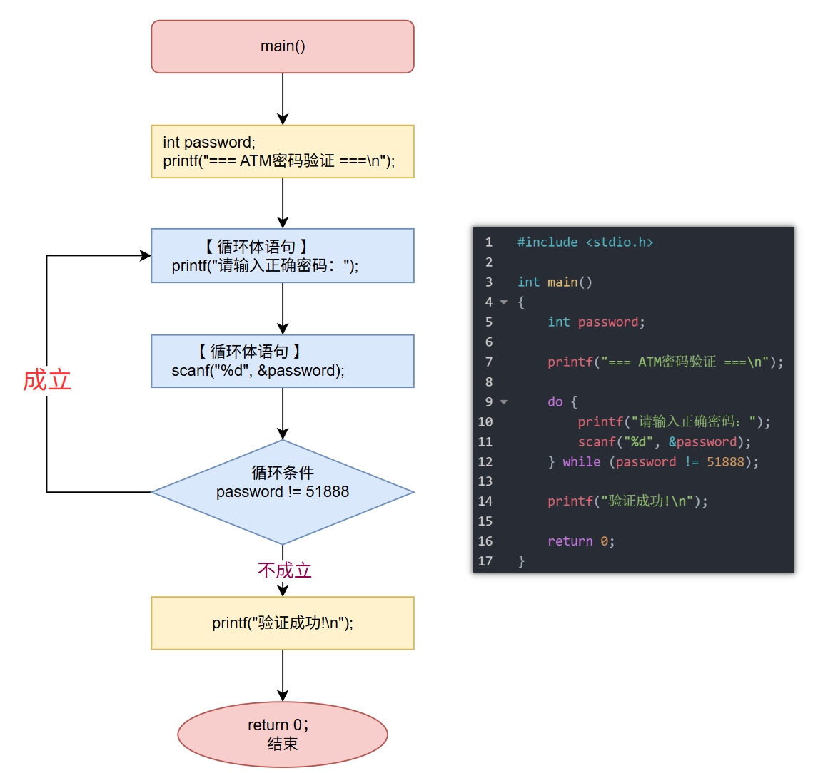

<!DOCTYPE lake>
<h1 data-lake-id="nZFkr" id="nZFkr"><span data-lake-id="u15020fd6" id="u15020fd6">0&gt; 功能需求</span></h1><p data-lake-id="u59c4f7ed" id="u59c4f7ed"><span data-lake-id="ud525b138" id="ud525b138">开发一个极简的数字密码验证系统，用于验证用户输入的数字密码是否正确，对比while和do-while区别。</span></p><hr/><h1 data-lake-id="SiqLX" id="SiqLX"><span data-lake-id="uc4d42792" id="uc4d42792">1&gt; 程序设计</span></h1><span class="yuque-card-unsupported">[codeblock]</span><span class="yuque-card-unsupported">[codeblock]</span><p data-lake-id="u5a746914" id="u5a746914"><span data-lake-id="u127f443b" id="u127f443b">while版本：printf和scanf需要重复写， do-while，无重复代码（scanf只出现一次）	</span></p><hr/><h1 data-lake-id="bC84W" id="bC84W"><span data-lake-id="uba529dc9" id="uba529dc9">2&gt; 语法基础</span></h1><span class="yuque-card-unsupported">[codeblock]</span><p data-lake-id="u8da06945" id="u8da06945"><span data-lake-id="u4a76c09d" id="u4a76c09d">执行流程图：</span></p><p data-lake-id="u8ad284bc" id="u8ad284bc"></p><p data-lake-id="u38b1ebea" id="u38b1ebea"><span data-lake-id="u0f8bb704" id="u0f8bb704">do-while适合：</span><span class="lake-fontsize-16" data-lake-id="udd8adb46" id="udd8adb46" style="color: #DF2A3F">先执行，后判断</span><span data-lake-id="u54d1effa" id="u54d1effa">；</span></p><hr/><h1 data-lake-id="byNK0" id="byNK0"><span data-lake-id="ub80a79e6" id="ub80a79e6">🐻</span><span data-lake-id="u2c351b22" id="u2c351b22">实践练习：</span></h1><p data-lake-id="ud3dd6371" id="ud3dd6371"><span data-lake-id="ud076ab5c" id="ud076ab5c">练习 1&gt; 正负数统计</span></p><p data-lake-id="u6566301f" id="u6566301f"><span data-lake-id="u2077f995" id="u2077f995">编写一个C语言程序，持续接收用户输入的整数，统计其中正数和负数的个数，当用户输入数字0时结束输入，最后输出统计结果。</span></p><p data-lake-id="u443a2d6b" id="u443a2d6b"><span data-lake-id="u495df552" id="u495df552">🤠</span><span data-lake-id="u53d4e493" id="u53d4e493">尝试写出do-while版本， while版本， for版本；</span></p><hr/><p data-lake-id="uf3c65f42" id="uf3c65f42"><span data-lake-id="uc2728a41" id="uc2728a41">练习 2&gt; 统计正整数的位数</span></p><p data-lake-id="uc214d02d" id="uc214d02d"><span data-lake-id="u367b724d" id="u367b724d">编写一个程序统计用户输入的正整数的位数，使用do-while循环实现。</span></p>